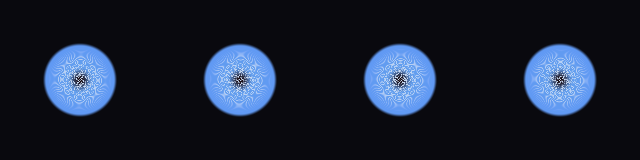

shader_review_smoke_002_portal_swirl_2d_005
cov 0.169 | motion 0.009 | contrast 0.159 |
color 0.252 | edge 0.019 | center 0.000
- motion low: increase speed/pulse/spin/scroll parameters
params
{
"color_outer": [
0.3969789196897799,
0.6418544886201252,
0.9692036975728759
],
"color_mid": [
0.39041088883303254,
0.6179590719259699,
1.0
],
"color_inner": [
0.8234507763415807,
0.8969209681791427,
1.0
],
"color_void": [
0.07249459400691965,
0.0,
0.00272831319473138
],
"radius": 0.4196,
"swirl": 8.5175,
"spin_speed": -1.3914,
"depth_pulse": 0.005,
"arms": 6,
"arm_strength": 1.0827,
"opacity": 0.96
}